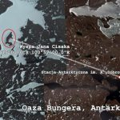

6 lutego 2020 roku zmarł w wieku 75 lat dr Jan CISAK, kierownik Obserwatorium Geodezyjno-Geofizycznego w Borowej Górze, wieloletni pracownik Instytutu Geodezji i Kartografii, polarnik, przedstawiciel roboczej grupy SCAR, uczestnik wielu wypraw:
- 1978-1979 Wyprawa Antarktyczna do Stacji A.B. Dobrowolskiego
- 1982 Wyprawa na Spitsbergen (grupa letnia)
- 1983/84 Kierownik VI Wyprawy do Stacji Polarnej w Hornsundzie na Spitsbergenie (grupa zimująca)
- 1988-89 Wyprawa do Stacji Antarktycznej im. H. Arctowskiego (grupa letnia)
Jedna z wysp w Oazie Bungera we wschodniej Antarktydzie nosi nazwę Jana Cisaka (Cisak Island).
Więcej na temat jego działalności można przeczytać w autorskim tekście pt. „POLSKIE WYPRAWY POLARNE W MINIONYM 70-LECIU INSTYTUTU GEODEZJI I KARTOGRAFII Z PERSPEKTYWY WSPOMNIEŃ PRACOWNIKÓW”
Msza żałobna zostanie odprawiona w kościele pw. Św. Rafała i Alberta na ul Gwiaździstej na Marymoncie w piątek 14 lutego o godz. 13:00. Pogrzeb odbędzie o 14:30 na Powązkach cywilnych w kwaterze 238 – dojście od 6 bramy na ul. Ostroroga.
{kind=link}
